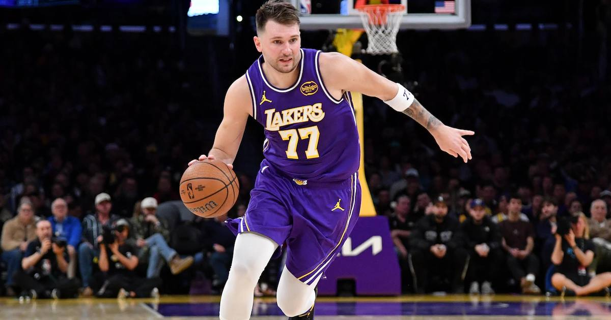

Luka Doncic scores season-high 53 in Lakers win over Portland
Luka Doncic dropped a season-high 53 — including a 62-foot halftime buzzer-beater — as the Lakers rallied past Portland 124-118, tying Allen Iverson for 10th on the NBA's all-time 50-point games list.

Disclosure: this post contains affiliate links. I earn a commission on qualifying purchases.
What happened
The Los Angeles Lakers beat the Portland Trail Blazers 124-118 on Friday night at Crypto.com Arena, and Luka Doncic was the whole story.
Doncic finished with a season-high 53 points, 5 rebounds, and 5 assists on 17-of-33 shooting, including 14-of-18 from the free-throw line. Austin Reaves added 25 as the Lakers won their fourth straight and improved to 8-2 — and avenged a 136-129 loss at Portland on October 27.
The shot of the night
For nearly 24 minutes, the Lakers could not buy a three. Then Doncic ended the first half by making the toughest look of them all.
With six seconds left in the half, Walker Kessler grabbed a loose ball, handed it to Doncic, set a screen, and watched him launch a 62-foot heave from three-quarter court. It banked in at the buzzer — only the Lakers' fourth make from deep in 23 attempts to that point — and cut Portland's lead to 60-53 at halftime.
"He's incredible to watch," Kessler said after the game.
The heave flipped the night. Doncic scored 20 points in the third quarter alone — outscoring the entire Blazers team by five in the frame — as Los Angeles outscored Portland 34-15. A Ziaire Williams three with 4:23 left in the third gave the Lakers their first lead since Doncic's opening basket made it 2-0, and they carried an 87-75 lead into the fourth with Doncic already at 40.
Portland did not fold. A late 12-point Lakers lead dwindled to four, and Damian Lillard's two free throws made it 114-110 with 50.8 seconds left. Doncic sealed it with a floater with 27.7 seconds to go, moving past the 50-point mark, and he and Reaves combined for 10 points in the final seconds.
Why this one is historic
The 53 was Doncic's 11th career 50-point game, moving him past Kareem Abdul-Jabbar and into a tie with Allen Iverson for 10th on the NBA's all-time list. It was his second 50-point game of the season — he scored 52 in the October 25 road win over Utah — and his fourth as a Laker, tying him for fourth in franchise history.
The streak around it is even wilder. This was Doncic's fourth consecutive game with at least 40 points, making him just the fourth player in Lakers history to do that, joining Kobe Bryant, Elgin Baylor, and George Mikan. He is the first Laker to reach 40 in four straight since Bryant in 2012.
It was also his seventh straight game with at least 35 points, 5 rebounds, 5 assists, and 5 made threes. No player in NBA history had ever produced six such games in a row. Doncic has now done it seven times. He has scored at least 40 in six of his last seven games — and 180 points over his last four.
The season totals are starting to sound like Wilt Chamberlain. Doncic is averaging a league-leading 40.1 points per game through nine games, with 361 points in that span. Chamberlain is the only player to score more through his first nine games of a season — 472 in 1962-63 and 455 in 1961-62 — and no player has averaged at least 40 points in a season since Chamberlain in 1962-63.
That is the context for what is happening in Los Angeles right now: with LeBron James gone to Philadelphia in the offseason, this is Doncic's team, and he is captaining the NBA's No. 1 offense.
The box score
Points: 53
Field goals: 17-33
Three-pointers: 5-15
Free throws: 14-18
Rebounds: 5
Assists: 5
Minutes: 38
Plus/minus: +16
Final score: Lakers 124, Trail Blazers 118
Lakers record: 8-2 (four straight wins)
Around the game
• Austin Reaves: 25 points, and half of the Lakers' 10 points in the final seconds alongside Doncic.
• Walker Kessler: 16 points and 12 rebounds.
• Deni Avdija: 22 points, 9 rebounds, and 11 assists for Portland.
• Damian Lillard: 22 points for the Blazers, whose three-game winning streak ended. It was just their second loss of the season.
• NBA Cup: the Lakers improved to 1-1 in group play; the Trail Blazers fell to 0-1.
What it means
This was an NBA Cup game, a revenge game, and a statement game all at once — and Doncic treated it like all three. The Lakers trailed by 16, could not hit a three, and still won because their best player decided the second half belonged to him. At 8-2 with a four-game winning streak, and with the league's leading scorer averaging 40.1 a night, the Lakers are not just winning. They are the team everyone else in the West is now measuring itself against.
Watch
Source: Luka Dončić EXPLODES For 53 Points & Makes Lakers History! 🔥 | EMIRATES NBA CUP 🏆 | November 6, 2026 — NBA. The official highlights of Doncic's 53-point night, including the 62-foot halftime buzzer-beater and his 20-point third quarter.
Sources
• Luka Doncic pours in 53 as Lakers rally past Blazers (Reuters)
• Luka dominates with 53 points, Lakers hold off Blazers (theScore)
• Luka Doncic scores 53 points as Lakers rally past Trail Blazers (New York Post)
• Is Luka Doncic already an MVP lock? (USA Today)
• Doncic passes Abdul-Jabbar, ties Iverson for 10th on all-time 50-point games list (Wire Report)
Gear up: Fanatics